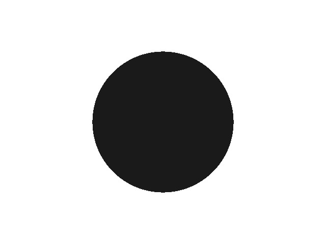
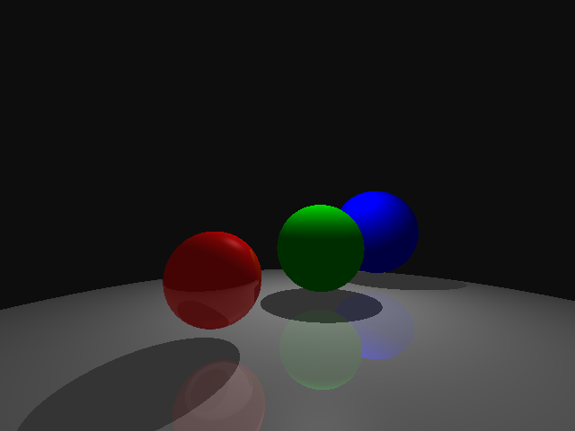
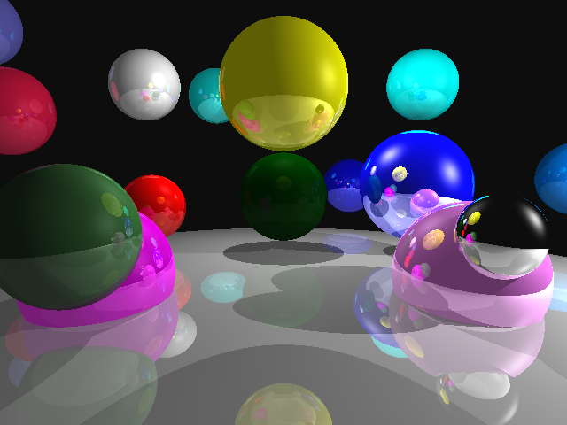
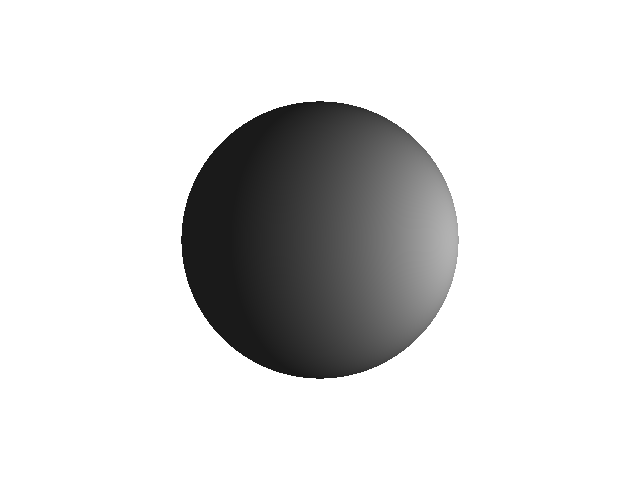
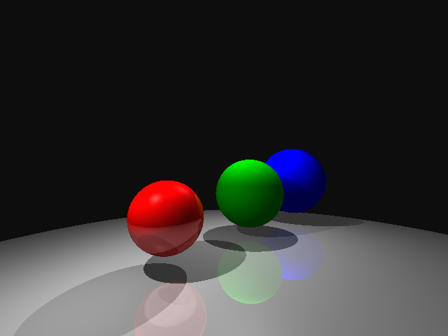
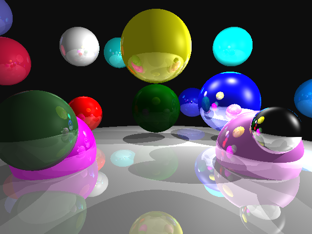
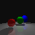
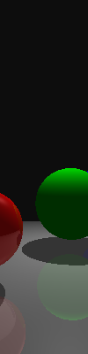
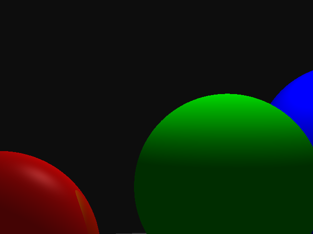
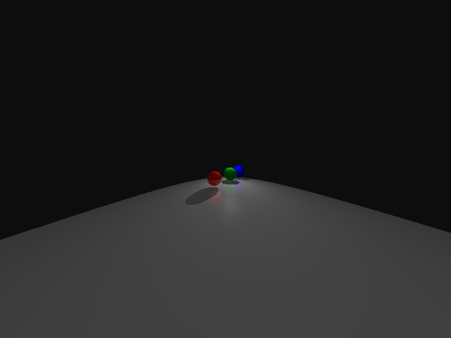

Jackson Kruger
Normally, the source code would be on Github,
but because of some issues that popped up last-minute, here's a zip of the code used for the images seen here currently.
For this assignment, unlike my previous two, I did this development on Windows in Visual Studio.
The file containing main, Raytracer.cpp, only exists to kick things off. It tells Parser what file to parse, who then initializes the relevant objects and sets appropriate values. The most important objects it initializes are the Renderer, the Scene, and the Camera. The Scene contains all of the lights and shapes (SceneObjects), while the camera primarily exists to construct the rays. The Renderer is the bridge between the Camera and the Scene, as well as the final Image object that is used to output at the end. It iterates over width and height, telling the camera to construct the rays, getting the colors of the pixels from the Scene, then setting the pixels of the Image. The Scene iterates through its list of pointers to SceneObjects, telling each sceneobject to intersect with the current Ray, producing an Intersection. Intersections currently are just a struct of Vector3s and a Material, but will soon be objects in their own right with a pointer to the Ray and SceneObject who produced it, as well as a Vector3 for the normal.
The following are the rendered outputs of the provided sample scenes. The only modifications I made to these before running them were commenting out the output_image line as I haven't yet bothered to parse desired output_image location. I currently just output in the working directory to a file called "raytraced.bmp".
  Each of these is just a sample scene with another point_light added.
  These are just to show that my Raytracer can handle odd FOV's and resolutions (they have hover text)
   